<!DOCTYPE html>
<html>
    <head>
        <meta charset="utf-8" />
        <meta name="viewport" content="width=device-width, initial-scale=1.0, shrink-to-fit=no" />
        <title>Home - Brand</title>
        <link rel="stylesheet" href="assets/bootstrap/css/bootstrap.min.css" />
        <link rel="stylesheet" href="https://fonts.googleapis.com/css?family=Montserrat:400,700&amp;display=swap" />
        <link rel="stylesheet" href="https://fonts.googleapis.com/css?family=Lato:400,700,400italic,700italic&amp;display=swap" />
        <link rel="stylesheet" href="assets/fonts/font-awesome.min.css" />
    </head>

    <body id="page-top" data-bs-spy="scroll" data-bs-target="#mainNav" data-bs-offset="72">
        <nav class="navbar navbar-light navbar-expand-lg fixed-top bg-secondary text-uppercase" id="mainNav">
            <div class="container">
                <figure class="figure">
                    
                    <figcaption class="figure-caption">HIOF</figcaption>
                </figure>
                <a class="navbar-brand" href="#page-top">HØGSKOLEN I ØSTFOLD</a><a href="#"></a>
                <button
                    data-bs-toggle="collapse"
                    data-bs-target="#navbarResponsive"
                    class="navbar-toggler text-white bg-primary navbar-toggler-right text-uppercase rounded"
                    aria-controls="navbarResponsive"
                    aria-expanded="false"
                    aria-label="Toggle navigation"
                >
                    <i class="fa fa-bars"></i>
                </button>
                <div class="collapse navbar-collapse" id="navbarResponsive">
                    <ul class="navbar-nav ms-auto"></ul>

                </div>
            </div>
        </nav>
        <header class="text-center text-white bg-primary masthead">
            <div class="container">
                
                <h1>MOHAMAD HUSSEN CHAMSI</h1>
                <h2 class="font-weight-light mb-0">STUDENT DATA - TREDJE ÅRETS STUDENT</h2>
            </div>
        </header>
        <section id="portfolio" class="portfolio">
            <div class="container">
                <h2 class="text-uppercase text-center text-secondary">SLUTTPROSJEKTET</h2>
                <div class="row">
                    <div class="col-md-6 col-lg-4">
                        <a class="d-block mx-auto portfolio-item" href="#portfolio-modal-3" data-bs-toggle="modal">
                            <div class="d-flex portfolio-item-caption position-absolute h-100 w-100">
                                <div class="text-center text-white my-auto portfolio-item-caption-content w-100">
                                    <i class="fa fa-search-plus fa-3x"></i>
                                    <h1>klikk til å ser mer :</h1>
                                </div>
                            </div>
                            
                        </a>
                        <p>Om Sluttprosjektet</p>
                    </div>
                    <div class="col-md-6 col-lg-4">
                        <a class="d-block mx-auto portfolio-item" href="#portfolio-modal-4" data-bs-toggle="modal"></a>
                        <p>Sluttprosjektet ARDUINO</p>
                    </div>
                    <div class="col-md-6 col-lg-4">
                        <a class="d-block mx-auto portfolio-item" href="#portfolio-modal-5" data-bs-toggle="modal">
                            <div class="d-flex portfolio-item-caption position-absolute h-100 w-100">
                                <div class="text-center text-white my-auto portfolio-item-caption-content w-100">
                                    <i class="fa fa-search-plus fa-3x"></i>
                                    <h1>klikk til å ser mer :</h1>
                                </div>
                            </div>
                            
                        </a>
                        <p>Sluttprosjektet 3D </p>
                    </div>
                    <div class="col-md-6 col-lg-4">
                        <a class="d-block mx-auto portfolio-item" href="#portfolio-modal-6" data-bs-toggle="modal">
                            <div class="d-flex portfolio-item-caption position-absolute h-100 w-100">
                                <div class="text-center text-white my-auto portfolio-item-caption-content w-100"><i class="fa fa-search-plus fa-3x"></i></div>
                            </div>
                            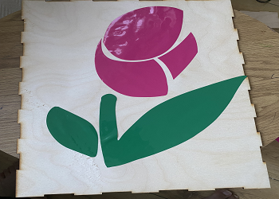
                        </a>
                        <p>Sluttprosjektet Laserkutting og Vinylkutting</p>


                    </div>
                </div>
            </div>
        </section>
        <section class="text-white bg-primary mb-0" id="about">
            <div class="container">
                <h2 class="text-uppercase text-center text-white">OM MEG :</h2>
                <p>
                    mitt navn Mohammed bor i Fredrikstad , nå jeg er tredje års data ingeniør . jeg liker å lære om nye teknologier . interessant i data basse,<br />
                    maskinlæring &nbsp;, matematikk .<br />
                    <br />
                    <br />
                </p>
            </div>
        </section>
        <section id="contact">
            <div class="container">
                <h2 class="text-uppercase text-center text-secondary mb-0">Contact Me</h2>
                <div class="row">
                    <div class="col-lg-8 mx-auto">
                        <form id="contactForm" name="sentMessage" novalidate="novalidate">
                            <div class="control-group">
                                <div class="mb-0 form-floating controls pb-2">
                                    <input class="form-control" type="text" id="name" required="" placeholder="Name" /><label class="form-label">Name</label><small class="form-text text-danger help-block"></small>
                                </div>
                            </div>
                            <div class="control-group">
                                <div class="mb-0 form-floating controls pb-2">
                                    <input class="form-control" type="email" id="email" required="" placeholder="Email Address" /><label class="form-label">Email Address</label><small class="form-text text-danger help-block"></small>
                                </div>
                            </div>
                            <div class="control-group">
                                <div class="mb-0 form-floating controls pb-2">
                                    <input class="form-control" type="tel" id="phone" required="" placeholder="Phone Number" /><label class="form-label">Phone Number</label><small class="form-text text-danger help-block"></small>
                                </div>
                            </div>
                            <div class="control-group">
                                <div class="mb-5 form-floating controls pb-2">
                                    <textarea class="form-control" id="message" required="" placeholder="Message" style="height: 150px;"></textarea><label class="form-label">Message</label>
                                    <small class="form-text text-danger help-block"></small>
                                </div>
                            </div>
                            <div id="success"></div>
                            <div><button class="btn btn-primary btn-xl" id="sendMessageButton" type="submit">Send</button></div>
                        </form>
                    </div>
                </div>
            </div>
        </section>
        <footer class="text-center footer">
            <div class="container">
                <div class="row">
                    <div class="col-md-4 mb-5 mb-lg-0">
                        <h4 class="text-uppercase mb-4">Location</h4>
                        <p>HØGSKØLEN I ØSTFOD&nbsp;</p>
                    </div>
                    <div class="col-md-4 mb-5 mb-lg-0">
                        <h4 class="text-uppercase">Around the Web</h4>
                        <ul class="list-inline">
                            <li class="list-inline-item"></li>
                            <li class="list-inline-item">
                                <a class="btn btn-outline-light text-center btn-social rounded-circle" role="button" href="#"><i class="fa fa-google-plus fa-fw"></i></a>
                            </li>
                            <li class="list-inline-item"></li>
                            <li class="list-inline-item"></li>
                        </ul>
                    </div>
                </div>
            </div>
        </footer>
        <div class="text-center text-white copyright py-4">
            <div class="container"><small>BY MHS</small></div>
        </div>
        <div class="d-lg-none scroll-to-top position-fixed rounded">
            <a class="text-center d-block rounded text-white" href="#page-top"><i class="fa fa-chevron-up"></i></a>
        </div>
        <div class="modal text-center" role="dialog" tabindex="-1" id="portfolio-modal-1">
            <div class="modal-dialog modal-lg" role="document">
                <div class="modal-content">
                    <div class="modal-header"><button type="button" class="btn-close" data-bs-dismiss="modal" aria-label="Close"></button></div>
                    <div class="modal-body">
                        <div class="container text-center">
                            <div class="row">
                                <div class="col-lg-8 mx-auto">
                                    <h2 class="text-uppercase text-secondary mb-0">Project Name</h2>
                                    <hr class="star-dark mb-5" />
                                    
                                    <p class="mb-5">H</p>
                                </div>
                            </div>
                        </div>
                    </div>
                    <div class="modal-footer pb-5">
                        <a class="btn btn-primary btn-lg mx-auto rounded-pill portfolio-modal-dismiss" role="button" data-bs-dismiss="modal"><i class="fa fa-close"></i>&nbsp;Close Project</a>
                    </div>
                </div>
            </div>
        </div>
        <div class="modal text-center" role="dialog" tabindex="-1" id="portfolio-modal-2">
            <div class="modal-dialog modal-lg" role="document">
                <div class="modal-content">
                    <div class="modal-header"><button type="button" class="btn-close" data-bs-dismiss="modal" aria-label="Close"></button></div>
                    <div class="modal-body">
                        <div class="container text-center">
                            <div class="row">
                                <div class="col-lg-8 mx-auto">
                                    <h2 class="text-uppercase text-secondary mb-0">Project Name</h2>
                                    <hr class="star-dark mb-5" />
                                    
                                    <p class="mb-5">Hello</p>
                                </div>
                            </div>
                        </div>
                    </div>
                    <div class="modal-footer pb-5">
                        <a class="btn btn-primary btn-lg mx-auto rounded-pill portfolio-modal-dismiss" role="button" data-bs-dismiss="modal"><i class="fa fa-close"></i>&nbsp;Close Project</a>
                    </div>
                </div>
            </div>
        </div>
        <div class="modal text-center" role="dialog" tabindex="-1" id="portfolio-modal-3">
            <div class="modal-dialog modal-lg" role="document">
                <div class="modal-content">
                    <div class="modal-header"><button type="button" class="btn-close" data-bs-dismiss="modal" aria-label="Close"></button></div>
                    <div class="modal-body">
                        <div class="container text-center">
                            <div class="row">
                                <div class="col-lg-8 mx-auto">
                                    <h2 class="text-uppercase text-secondary mb-0">Om Sluttprosjektet </h2>
                                    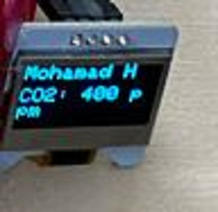

                                    <p class="mb-5">
                                      Prosjektet mitt har som mål å måle CO2-nivået i luften ved hjelp av SGP30-sensoren koblet til
                                      Arduino.
                                      I dette prosjektet har jeg valgt å kombinere mange temaer innen digital fabrikasjon .
                                      Oppgaven gikk ut på å utvikle et kryss-disiplinært prosjekt som dekker så mange av de ulike
                                      temaene vi har lært om som mulig. Målet var å bruke minimum to temaer innen digital
                                      fabrikasjon, inkludert 3D-utskrift, laserkutting, vinylkutting, PCB-fresing og CNC-maskinering, i
                                      tillegg til elektronikk.
                                      Jeg har valget å benytte meg av 3D-utskrift laserkutting og elektronikk som mine 3
                                      hovedtemaer innen digital fabrikasjon. Jeg har brukt 3D-print teknologi til å produsere deler
                                      og komponenter som er nødvendige for prosjektet mitt.</p>
                                      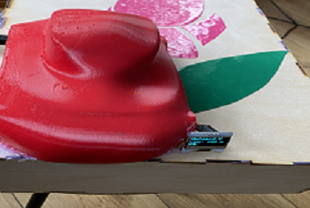
                                      <p class="mb-5">
                                      I tillegg har jeg benyttet laserkutting, som har gitt meg muligheten til å lage presise snitt og
                                      graveringer i trematerialer. Jeg har brukt laserkutting til å skape tiltalende og funksjonelle
                                      element som komplementer 3D-utskriftskomponent min. Videre har jeg integrert elektronikk
                                      i prosjektet ved å bruke Arduino-plattformen. Arduino er et populært åpent kildekodeverktøy
                                      som gjør det mulig å programmere og kontrollere elektroniske enheter.</p>

                                        <br />
                                        .
                                    </p>
                                </div>
                            </div>
                        </div>
                    </div>
                    <div class="modal-footer pb-5">
                        <a class="btn btn-primary btn-lg mx-auto rounded-pill portfolio-modal-dismiss" role="button" data-bs-dismiss="modal"><i class="fa fa-close"></i>&nbsp;Close Project</a>
                    </div>
                </div>
            </div>
        </div>
        <div class="modal text-center" role="dialog" tabindex="-1" id="portfolio-modal-4">
            <div class="modal-dialog modal-lg" role="document">
                <div class="modal-content">
                    <div class="modal-header"><button type="button" class="btn-close" data-bs-dismiss="modal" aria-label="Close"></button></div>
                    <div class="modal-body">
                        <div class="container text-center">
                            <div class="row">
                                <div class="col-lg-8 mx-auto">
                                    <h2 class="text-uppercase text-secondary mb-0"> ARDUINO SGP3 SENSOREN</h2>
                                    <p>SGP30-sensoren bruker en teknologi for å måle gasser i luften. Arduino er en mikrokontrollerplattform som
                                       gir mulighet for å kontrollere og
                                       kommunisere med eksterne enheter, inkludert SGP30-sensoren.
                                       SGP30-sensoren er en avansert luftkvalitetssensor
                                       som spesifikt er designet for å måle VOC
                                       (flyktige organiske forbindelser) og eCO2 (ekvivalent karbondioksid) nivåer i luften. .</p>
                                    
                                    <p>
                                      En av de fremragende egenskapene til SGP30-sensoren er dens nøyaktighet og pålitelighet.
                                      Sensoren gir fullt kalibrerte utgangssignaler med en typisk nøyaktighet på 15% innenfor målte
                                      verdier. Dette gjør den egnet for presis luftkvalitetsmåling og overvåkning. SGP30-sensoren
                                        bruker en kombinasjon av metall-oksid sensorelementer som er plassert på en enkelt brikke.
                                        Denne innovative designen gir detaljerte og pålitelige signaler om luftkvaliteten. Sensoren gir
                                        også utgangssignaler for TVOC (totale flyktige organiske forbindelser) og CO2eq (ekvivalent
                                        karbondioksid) med enestående langtidsstabilitet og lavt strømforbruk. (mamtazalam, August
                                        ,18,2022) .
                                        Ved å koble SGP30-sensoren til Arduino og bruke et program skrevet i
                                        Arduinoprogrammerings språket, får du muligheten til å lese data fra sensoren og bruke denne
                                        informasjonen til å styre ulike typer utstyr.
                                        Når du har koblet en SGP30-sensor til Arduino, vil sensoren kontinuerlig overvåke gassnivåene
                                        i luften og sende disse dataene til Arduino-kontrolleren. Sensoren er i stand til å måle VOC
                                        (flyktige organiske forbindelser) og eCO2 nivåer. Disse målingene gir verdifull informasjon om
                                        luftkvaliteten i det aktuelle miljøet.
                                        Med Arduino-programmet vi kan analysere dataene fra sensoren og ta tiltakene hva er basert
                                        på de målte gassverdiene. For eksempel kan offentlig sektor bruke grenseverdier for CO2-
                                        nivåer og opprette handlinger når disse grenseverdiene overskrift .
                                        Måle mitt med å bruke Arduino og SGP30-sensoren sammen er for å få nøyaktige målinger av
                                        CO2-nivåer og VOC i luften. Dette er viktig for å overvåke og forbedre luftkvaliteten innendørs
                                        og utendørs. Ved å få overskrift i luftkvaliteten kan du ta informerte beslutninger for å
                                        redusere eksponeringen for skadelige gasser og forbedre helsen til mennesker og miljøet.

                                    </p>

                                    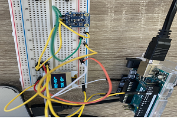
                                    <hr class="star-dark mb-5" />
                                    
                                    <p>dette bilde viser hvordan sensor måle co2 med flere forskjellige mål</p>
                                    

                                    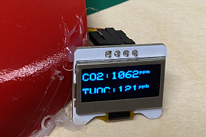
                                    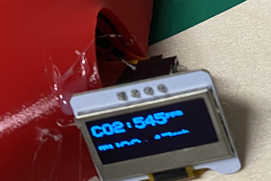


                                    <p class="mb-5">
                                        SGP30-sensoren bruker en teknologi for å måle gasser i luften. Arduino er en mikrokontroller-plattform som gir mulighet for å kontrollere og kommunisere med eksterne enheter, inkludert SGP30-sensoren.
                                        Hvordan prosjekt fungerer : Ved å koble sensoren til Arduino og benytte et program skrevet i Arduino-programmeringsspråket, kan man lese data fra sensoren og bruke denne informasjonen til å drive
                                        ulike typer utstyr. Når en SGP30-sensor er koblet til en Arduino, vil sensoren kontinuerlig måle gasser i luften og sende data til Arduino-kontrolleren. Arduino vil deretter analysere dataene og
                                        kontrollere enheter basert på de målte gassverdiene. Fordelene med dette prosjekt : Det å lage et prosjekt med Arduino gassmåling ved hjelp av sensoren SGP30 har mange fordeler. For det første er
                                        SGP30 en avansert sensorteknologi som gir nøyaktige og pålitelige målinger av luftkvaliteten. Dette gjør det mulig å monitorere og overvåke gasser som CO2. For det andre er Arduino en enkel og
                                        tilgjengelig plattform for å utvikle elektroniske prosjekter. Det gir en rekke verktøy og biblioteker som gjør det mulig å enkelt sette opp og kontrollere sensoren. Sammen gir dette mulighet for å
                                        lage et funksjonelt og kostnadseffektivt gassmålingssystem. Det å ha kontroll over gasskvaliteten i omgivelsene kan være viktig for å sikre god helse og trygghet. Ved å bruke en SGP30-sensor koblet
                                        til en Arduino, kan man for eksempel overvåke luftkvaliteten i hjemmet, på arbeidsplassen eller i andre områder med høy menneskelig eksponering for gasser. Alt i alt gir samarbeidet mellom en
                                        SGP30-sensor og en Arduino mange muligheter for å utvikle et kraftfullt og nyttig gassmålingssystem.
                                    </p>
                                </div>
                            </div>
                        </div>
                    </div>
                    <div class="modal-footer pb-5">
                        <a class="btn btn-primary btn-lg mx-auto rounded-pill portfolio-modal-dismiss" role="button" data-bs-dismiss="modal"><i class="fa fa-close"></i>&nbsp;Close Project</a>
                    </div>
                </div>
            </div>
        </div>
        <div class="modal text-center" role="dialog" tabindex="-1" id="portfolio-modal-5">
            <div class="modal-dialog modal-lg" role="document">
                <div class="modal-content">
                    <div class="modal-header"><button type="button" class="btn-close" data-bs-dismiss="modal" aria-label="Close"></button></div>
                    <div class="modal-body">
                        <div class="container text-center">
                            <div class="row">
                                <div class="col-lg-8 mx-auto">
                                    <h2 class="text-uppercase text-secondary mb-0">Sluttprosjektet 3D</h2>
                                    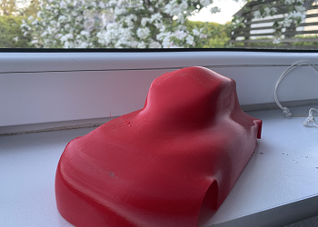
                                    
                                    
                                    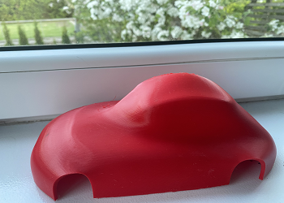
                                    
                                    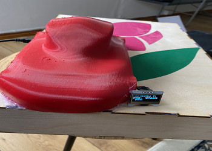


                                    <p class="mb-5">
                                      Jeg har valgt å designe en 3D-modell av en bil i prosjektet mitt på grunn av denne betydelige
                                      påvirkning på CO2-utslippene til miljøet. Transportsektoren, spesielt veitrafikk, står for en
                                      betydelig andel av de globale klimagassutslippene, og CO2 er en av de mest skadelige
                                      klimagassene.
                                      Ved bruk av 3D-printing har vært nyttig i prosjektet mitt, da det har jeg produsere
                                      nødvendige del og komponenter på en effektiv måte. Jeg har brukt 3D-teknolgi til å designe
                                      en bil som skal festes en SGP30-sensoren. Bilen er utformet slik at den kan festes på veggen
                                      eller henges på døren for å måle CO2-nivåene i luft.
                                      Ved å bruke 3D-printing har jeg fått lært i hvordan man designer et objekt og tilpasser
                                      behovet mitt . Jeg har brukt PrusaSlicer-programvaren til å forberede filene mine for utskrift.
                                      Programvaren har gitt meg muligheten til å balansere parametere som lagtykkelse, fyllprosent
                                      og støttestruktur for å ha en gode og sikre en utskriftsprosess.
                                      I tillegg har jeg bruket Fusion 360-programvaren for å designe mit bilen.
                                      Fusion 360 har gitt meg et stor sett med verktøy for å lage 3D-modeller. Jeg har kunnet
                                      designe bilens form, dimensjoner og ved hjelp av dette programmet
                                    </p>
                                </div>
                            </div>
                        </div>
                    </div>
                    <div class="modal-footer pb-5">
                        <a class="btn btn-primary btn-lg mx-auto rounded-pill portfolio-modal-dismiss" role="button" data-bs-dismiss="modal"><i class="fa fa-close"></i>&nbsp;Close Project</a>
                    </div>
                </div>
            </div>
        </div>
        <div class="modal text-center" role="dialog" tabindex="-1" id="portfolio-modal-6">
            <div class="modal-dialog modal-lg" role="document">
                <div class="modal-content">
                    <div class="modal-header"><button type="button" class="btn-close" data-bs-dismiss="modal" aria-label="Close"></button></div>
                    <div class="modal-body">
                        <div class="container text-center">
                            <div class="row">
                                <div class="col-lg-8 mx-auto">
                                    <h2 class="text-uppercase text-secondary mb-0">Laserkutting og Vinylkutting</h2>
                                      <p class="mb-5">
                                        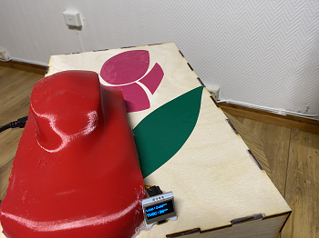
                                        <p class="mb-5">
                                        jeg har laget ved hjelp av laserkutting er en boks . Denne boksen fungerer som en
                                        monteringsenhet for å feste bilen over den. Ved behov kan den enkelt demonteres for enkel
                                        tilgang og montering . Ved å bruke laserkutting har jeg kunnet produsere deler med nøyaktige
                                        mål som passer perfekt sammen.
                                        I tillegg kan bruke boksen som jeg har laget i laserkutting har blitt brukt til å plassere Arduino
                                        og kabler inne i. Denne boksen bidrar til å organisere og beskytte elektronikken samtidig som
                                        den gir en ren og ryddig løsning</p>


                                    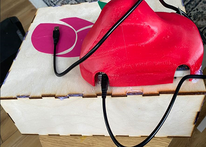
                                    <p class="mb-5">
                                    Laserkutting teknologien har virkelig hjulpet meg med å gå vedre i mitt prosjekt. Den presise
                                    og nøyaktige kuttingen i trematerialer har gjort det mulig å lage funksjonelle komponen 3Dutskriftene mine på gode måte. Laserkutting har spart mye tid og arbeid .
                                    I prosjektet mitt har jeg benyttet meg av MakerCase for å designe boksen jeg nevnte tidligere.
                                    MakerCase er et praktisk online verktøy som gir mulighet for rask og enkel design av
                                    tilpassede bokser  </p>

                                    
                                    <p class="mb-5">
                                    jeg har bruker vinylkutting. p denne måten har jeg legget til et ekstra visuelt element i
                                    prosjektet mitt. Vinylkutting har gitt meg muligheten til å lage klistremerker som symboliserer
                                    naturen .Gjennom å bruke vinylkutting har jeg kunnet designe og produsere klistremerker
                                    som kan festes på boks overflate. Disse klistremerkene blomster, trær eller andre symboler
                                    som er knyttet til naturen. Dette vil bidra til å markere prosjekt tilknytning til og bevissthet
                                    om miljøet.
                                    Vinylkuttingsteknologien har vist seg å være svært nyttig i prosjektet mitt til designet. Den gir
                                    meg friheten til å bruke med ulike former, størrelser og farger for klistremerkene.
                                    Jeg har brukt Cricut Maker til å produsere klistremerker til prosjektet mitt. Cricut Maker er en
                                    kuttemaskin som gjør det mulig å skjære ut ulike materialer, inkludert vinyl.
                                    Ved hjelp av Cricut Maker har jeg kunnet designe og tilpasse klistremerker i forskjellige
                                    størrelse . Jeg har brukt Cricut Design Space-programvaren til å lage designene mine og
                                    deretter overføre dem til Cricut Maker for kutting. Cricut Maker har vært en veldig gode
                                    hjelpe i prosjektet mitt på grunn av sin nøyaktighet og pålitelighet. Maskinen har gjort det
                                    enkelt å produsere profesjonelle og skarpe klistremerker som kan festes på boks og bil .  </p>

                                    <p class="mb-5">MHS</p>
                                </div>
                            </div>
                        </div>
                    </div>
                    <div class="modal-footer pb-5">
                        <a class="btn btn-primary btn-lg mx-auto rounded-pill portfolio-modal-dismiss" role="button" data-bs-dismiss="modal"><i class="fa fa-close"></i>&nbsp;Close Project</a>
                    </div>
                </div>
            </div>
        </div>
        <script src="assets/bootstrap/js/bootstrap.min.js"></script>
        <script src="assets/js/freelancer.js"></script>
    </body>
</html>
